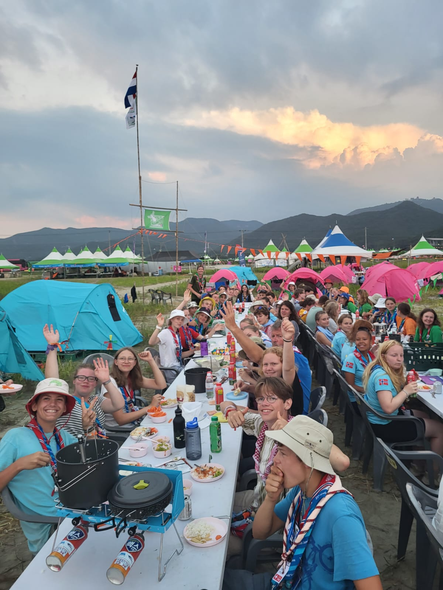
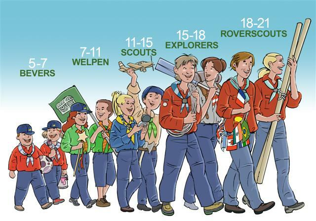

<!DOCTYPE html>
<html lang="en">
</html>
<head>
    <meta charset="UTF-8">
    <meta name="viewport" content="width=device-width, initial-scale=1.0">
    <title>Document</title>
    <link rel="stylesheet" href="style.css">
</head>
    <h1>Mijn Hobbbie : Scouting</h1>
    <h2 style=>Scouting</h2>
</p style=>Scouting is iets wat ik al sinds dat ik 5 was doe, dat is op de dag van vandaag 05/09/2023 11 jaar geleden. 
        Dit doe ik bij <a href="https://www.hartelgroep.nl/" target="_blank">Scouting hartelgroep</a>.
        Ik wil zelf ook vrijwillig leiding woorden voor een van de speltakken.<br> </p>
        </p>
        We hebben verschillende speltakken we hebben er 5 : <br>
        De bevers is de eerste speltak, die van 5 tot 7 jaar zijn. <br> 
        De welpen is de tweede speltak, die van 7 tot 11 jaar zijn. <br>
        De scouts is de derde speltak, die van 11 tot 15 jaar zijn <br>
        De explorers zijn de vierde speltak, die van 15 tot 18 jaar zijn. <br> 
        De roverscouts zijn het vijfde speltak, die zijn 18 tot 21 jaar. <br>
        <br>
        Ik vind dit jammer want daarna kan je niet meer normaal scouting volgen. 
        Wat je wel nog kan doen is leiding worden voor een vavn de vijf speltakken.
        </p>
        Ik hoor vaak veel kritiek over scouting en dat het niks voorsteld, maar het heeft mij echt wel geholpen met mijn ontwikkeling.
        Ik ben enorm blij dat mijn moeder het ooit heeft voorgesteld aan mijn vader. Ik denk dat het een van de beste keuzes ooit was.
        Ik voel me altijd thuis en welkom daar, waardoor ik daar graag zo vaak mogelijk ben. Iedereen is zichzelf en iedereen laat los,
        niemand probeerd iemand anders te zijn.
        </p>
         </a>
         </a>
    </p>Deze pagina is gemaakt door: Toon van Berkel</p>
</html>